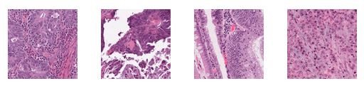
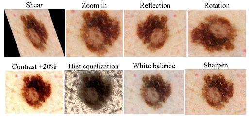

Immunotherapy treatment is responsible for a significant reduction in cancer patient mortality and is a cornerstone of cancer therapy (Kather & et al, 2019, 1). However gastro-intestinal cancer patients tend not to benefit from the treatment, as other
solid malignant tumor cancer patients might, unless the tumor belongs to the group Microsatellite Instable (MSI) (Kather & et al, 2019, 1). This group accounts for approximately 15% of gastric adreno-carcinomas and colorectal cancers,
with the remaining 85% being Microsatellite Stable (MSS) tumors. Currently most gastro-intestinal cancer patients are not tested to determine if their tumor falls within the MSI group as to do so requires extensive immunohistochemistry
and genetic analysis (Kather & et al, 2019, 1).
The current process for patients to achieve a MSI cancer-type diagnosis (and immunotherapy treatment) requires extensive immunohistochemistry and genetic testing (Kather & et al, 2019). Furthermore, analysis of this testing
is typically conducted by a human pathologist with domain expertise. These extra requirements and associated time delays reduce screening of patients for MSI-type cancer. Accordingly, a significant portion of the 15% of gastro-intestinal
cancer patients may not be offered timely and potentially life-saving immunotherapy treatment (Kather & et al, 2019).
We aim to develop an accurate model that can assist medical professionals in achieving MSI cancer diagnoses for patients. Thereby increasing access and use of critical immunotherapy treatments. This model will receive a
haematoxylin and eosin (H&E) stained histology image tile. Convolutional Neural Networks (CNNs) such as VGGNet and ResNet will be used to extract relevant features from the cell microstructures present in the images. These structures
are generally indistinguishable by the human eye. The features will then be fed through a classifier such as Fully-Connected Neural Network with Soft-Max Function, Decision Tree, Random Forest or Support Vector Machine. Returning
a classification prediction for MSI and MSS-type cancer.
Deep learning models are generally more accurate than machine learning approaches when performing image classification (O'Mahony, 2019). This is partly due to deep learning’s ability to generalise when presented with new information and infer features
from provided data (O'Mahony, 2019). Whereas machine learning approaches require developers to manually extract and weight relevant feature descriptors (Li et al., 2014, 844; O'Mahony, 2019). Similarly, deep learning models are
generally more accurate than human domain experts when classifying medical images.
Neural networks distinct advantages arise from their ability to generalise solutions to different types of problems using similar designs (Li et al., 2014, 844). In image classification problems, image pixels within red,
green and blue (RGB) channels can be used directly as input to standard feed-forward neural networks. The neural network learns the correct classification from this raw image pixel data. However, even small image tiles may contain
thousands of pixels, resulting in very large numbers of connections between nodes and millions of weights to calculate (Li et al., 2014, 845).
In contrast, CNN models combine weights into small kernel filters that dramatically simplifies the learning model. Focusing learning on features extracted by convolutions, rather than raw pixel data. CNN networks are a
successful attempt to model humans’ visual cortex architecture using neural networks (Li et al., 2014, 844). They are much faster and more robust than traditional feed-forward neural networks (Li et al., 2014, 845). Consequently,
research based on CNNs has significantly improved classification accuracy for image databases including the MNIST and NORB databases, and the CIFAR10 dataset (Li et al., 2014, 844).
A typical CNN consists of a series of connected blocks comprising convolutional, pooling and fully-connected layers enabling feature extraction and classification (Talo, 2019, 3) (see Figure 1). Different CNN architectures
uniquely order and connect these blocks and layers to produce novel new learning capabilities. AlexNet, one of the first implementations of CNNs, comprises 11 layers: 5 convolutional layers, 3 pooling/down-sampling layers and 3
fully-connected layers. VGGNet-16, another well-known CNN, has 13 convolutional layers, 5 pooling/down-sampling layers and 3 fully-connected layers.

Figure 1: Convolution Neural Network architecture diagram (Saha, 2018).
Modern CNN architectures tend to be deeper than shallow architectures and use progressively more complex connections across alternating layers (Talo, 2019, 3). ResNet CNN architecture introduced residual connections to avoid information loss during training
of deep networks, such as a 1001-layer deep CNN model (Talo, 2019, 3). The DenseNet CNN architecture was built with structures connecting each layer to subsequent layers. Important features learned by any DenseNet layer could then
be shared within the network (Talo, 2019, 3).
The dataset contains approx. 192,000 224x244px tile images (Kather, 2019). Each image displays a Formalin-Fixed Paraffin-Embedded tissue sample originally captured as a Whole Slide Image (WSI) (Kather, 2019; Talo, 2019, 1). These WSIs have been cropped
and split into tiles to reduce image size. As model size and memory requirements exponentially increase with image dimensions (Li et al., 2014, 845). These samples have been stained to reveal high-level structures and histologies
(Kather, 2019; Talo, 2019, 1). The structures are generally analysed by pathologists for morphological characteristics (Talo, 2019, 1). With MSI classification depending on the presence of instability in these structures (Kather
& et al, 2019). This dataset is therefore well-suited to CNN-type deep learning models (Li et al., 2014, 844).

Figure 2: Example H&E stained tile images from proposed dataset (Kather, 2019)
Pre-processing is highly relevant to improving dataset robustness and model accuracy. For image classification tasks this generally involves colour normalisation, resizing, randomisation, and segregation. This dataset has been pre-processed prior to being
made publicly available. The tile images have been colour normalised according to the Mackenko method (Kather, 2019, Macenko et al., 2009) - removing inconsistencies and bringing each WSI into a common normalised space (Macenko
et al., 2009). The tile images have been resized to a common 244x244px dimension - a common default input dimension for many CNNs (Siu et al., 2018, 4-5). The data has been segregated into two sets containing 70% training data
and 30% test data. Images have been randomly assigned into these sets per patient, not per tile, preserving testing integrity (Kather, 2019). Finally, equilibration of training set data was achieved by randomly undersampling the
MSS-type class which contained more image tiles than MSI-type (Kather, 2019).
Various training approaches have been developed to balance pre-trained and custom CNNs trade-offs, including transfer learning and fine-tuning.
The transfer learning technique involves ‘freezing’ the convolutional base and removing the pre-trained classification layers (Shin et al., 2016). The remaining convolutional layers are used as a feature extractor for the
new classifier trained on our dataset (Talo, 2019, 3; Shin et al., 2016). For image classification tasks, the standard approach is to use a stack of fully-connected neural network layers followed by a Soft-Max activation layer
(Marcelino, 2018). The Soft-Max layer outputs the probability distribution for the MSI and MSS-type cancer classes. Classification then occurs according to the most probable class (Marcelino, 2018).
Using the transfer learning technique we may transfer the knowledge (i.e. weights) of the basic structures learned in the CNNs initial layers to the new classifier (Talo, 2019, 3; Shin et al., 2016). The essential structures
that pre-trained CNN models have learned to identify different objects in databases such as ImageNet can be used to classify WSI histologies (Talo, 2019, 3; Shin et al., 2016). This technique therefore accelerates the training
and development process for new CNN models and classification tasks.
Given our dataset is quite large (with approx. 192,000 tile images) we may also choose to ‘unfreeze’ some convolutional layers in the pre-trained CNN during training (Marcelino, 2018). This process is referred to as fine-tuning
the CNN model. Convolutional layers generally extract either low-level features that are generic and problem independent, and high-level features specific to the image classification problem (Mikołajczyk & Grochowski, 2018, 3).
By unfreezing some of these layers, we can allow our CNN to learn the high-level features specific to our dataset. This affects the CNNs generalising capability but improves classification accuracy for our specific classes.
Importantly however, we must be careful when adjusting the learning rate used in the unfrozen convolutional layers (Marcelino, 2018). The learning rate is a hyper-parameter controlling adjustment of weights within the CNN.
When using a pre-trained CNN model it is beneficial to retain a small learning rate to prevent losing previous knowledge. Considering most pre-trained CNNs are trained on massive datasets, keeping a small learning rate will ensure
that the CNNs useful pre-trained low-level feature extraction weights are not distorted too soon or too much during fine-tuning (Marcelino, 2018).
Augmenting training datasets can improve CNNs classification accuracy (Mikołajczyk & Grochowski, 2018; Heidari et al., 2020; Taylor & Nitschke, 2017). Augmentation generally involves applying combinations of simple affine
transformations such as rotation, reflection, shearing, and zooming to images (Mikołajczyk & Grochowski, 2018, 2). Geometric augmentations may also be used to broaden a dataset, though these are still the subject of research (Mikołajczyk
& Grochowski, 2018, 2). These augmentations include increasing image contrast, white balance, sharpening, and histogram equalisation (Mikołajczyk & Grochowski, 2018, 2). The total dataset is artificially inflated by these combined
augmentations (Taylor & Nitschke, 2017). This improves CNNs ability to generalise against unseen data. Reducing the over-fitting effect that occurs during fine-tuning (Taylor & Nitschke, 2017).

Figure 3: Data augmentation methods applied to melanoma tile images (Mikołajczyk & Grochowski, 2018).
- Cao, A., Corbett, C., Ha, L., & Wan, Q. (2021). Group 1 - Project Proposal. Monash University - FIT3163.
- Kather, J. (2019, February 7). Histological images for MSI vs. MSS classification in gastrointestinal cancer, snap-frozen samples [Dataset]. Zenodo. https://doi.org/10.5281/zenodo.2532612
- Kather, J. (2019, February 7). Histological images for tumor detection in gastrointestinal cancer [Dataset]. Zenodo. https://doi.org/10.5281/zenodo.2530789
- Kather, J., & et al. (2019, July). Deep learning can predict microsatellite instability directly from histology in gastrointestinal cancer. Nature Medicine, (25), 1054–1056. https://doi.org/10.1038/s41591-019-0462-y
- Kather, J. N. (2019, February 7). Histological images for MSI vs. MSS classification in gastrointestinal cancer, FFPE samples [Dataset]. Zenodo. https://doi.org/10.5281/zenodo.2530834
- Li, Q., Cai, W., Wang, X., Zhou, Y., Feng, D., & Chen, M. (2014, December). Medical Image Classification with Convolutional Neural Networks. International Conference on Control, Automation, Robotics & Vision, 844-848. 10.1109/ICARCV.2014.7064414
- Macenko, M., Niethammer, M., Borland, D., Woosley, J., Guan, X., Schmitt, C., & Thomas, N. (2009, June). A Method for Normalizing Histology Slides for Quantitative Analysis. Proceedings of the 2009 IEEE International Symposium
on Biomedical Imaging: From Nano to Macro, 1107-1110. http://helios.mi.parisdescartes.fr/~lomn/Data/histopathoDec2017/DestainingNiethamer2009.pdf
- Marcelino, P. (2018, October 24). Transfer learning from pre- trained models. Towards Data Science. https://towardsdatascience.com/search?q=Transfer%20learning%20from%20pre-%20trained%20models
- Mikołajczyk, A., & Grochowski, M. (2018). Data augmentation for improving deep learning in image classification problem. 2018 International Interdisciplinary PhD Workshop, 117-122. 10.1109/IIPHDW.2018.8388338.
- O'Mahony, N. (2019, October). Deep Learning vs. Traditional Computer Vision. Advances in Computer Vision Proceedings of the 2019 Computer Vision Conference, 128-144. 10.1007/978-3-030-17795-9
- Saha, S. (2018, December 16). A Comprehensive Guide to Convolutional Neural Networks — the ELI5 way. Towards Data Science. https://towardsdatascience.com/a-comprehensive-guide-to-convolutional-neural-networks-the-eli5-way-3bd2b1164a53
- Shin, H.-C., Roth, H., Gao, M., Lu, L., Xu, Z., Nogues, I., Yao, J., Mollura, D., & Summers, R. (2016, May). Deep Convolutional Neural Networks for Computer-Aided Detection: CNN Architectures, Dataset Characteristics and Transfer
Learning. IEEE Transactions on Medical Imaging, 35(5), 1285-1298. 10.1109/TMI.2016.2528162
- Talo, M. (2019). Automated classification of histopathology images using transfer learning. Artificial Intelligence in Medicine, 101. https://doi.org/10.1016/j.artmed.2019.101743
- Taylor, L., & Nitschke, G. (2017). Improving Deep Learning using Generic Data Augmentation. arXiv preprint. arXiv:1708.06020